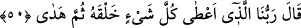

İmam Râzî şöyle der: “Fir’avn, Mûsâ (a.s.)’a: “Biz seni çocukken büyütmedik mi”
(eş-Şuara, 26/18) diyerek kendisini rab olarak vasfettiği halde, burada “Sizin
Rabbinizi” diyerek rabliği başkasına nisbet etmiştir. Fir’avn bunu hayretini göstermek
için söylemiş, sanki ‘Ben varken niye başka bir Rabb’e ibâdet ediyorsunuz?’ demek
istemiştir.
Fir’avn’un sözünün başında “Sizin Rabbiniz” diye hem Mûsâ hem de Hârun (a.s.)’a
hitab ederken, sonunda “ey Mûsâ” diyerek sözü sadece ona yöneltmiştir. Bu, Fir’avn’un
kendine yapılan tebliğde asıl vazifelinin Mûsâ (a.s.) olduğunu, Hârun’un ise onun
yardımcısı ve veziri olduğunu bilmesindendir.
50. O da: “Bizim Rabbimiz, her şeye hilkatini (varlık ve özelliğini) veren, sonra
da doğru yolu gösterendir.” dedi.
“O da:” Mûsâ (a.s.) da ona cevap olarak “Bizim Rabbimiz” sırf rahmetinden dolayı
“her şeye” bütün mahlûkâta “hilkatini” yâni özelliklerini ve faydalarına olacak şeyleri
içeren, onlara uygun sûret ve şekilleri “veren”dir dedi. Âyetteki “halk” kelimesinden
maksad yaratılmışlardır.
Mûsâ (a.s.)’ın “Rabbimiz” sözündeki çoğul zamir Mûsâ ve Hârun (a.s.), Fir’avn ve
onlardan başka herkes için geneldir. Mûsâ (a.s.): “Rabbimiz Allah’tır” dememiş, fiili
fâile delil göstermek için O’nu fiilleriyle vasfetmiştir.
“Sonra da doğru yolu gösterendir.” dedi.” Allah mahlûkâtın her birini, kendisinden
sâdır olacak ve olması gereken şeylere yöneltti. Bu yöneltme, cansız varlıklarda tabîat
îtibâriyle canlı varlıklarda ise irâde bakımındandır. Onları yaratıldıkları şey için
hazırladı. Uzuvların bir araya getirilip cisimlere şekil verilmesi demek olan yaratma, bu
uzuvlara hareket etme ve kavrama kuvvetleri vermek demek olan hidâyetten önce olduğu
için yaratma ile hidayet fiilleri arasına “sonra” kelimesi getirilmiştir.
Büyüklerden birisi şöyle der: Mahlûkâtın hepsinin hayâtı ve ruhu vardır. Bu, ya insan,
cin, melek ve onlara tâbi olanlarda olduğu gibi görünüşte olur ya da cansız varlıklar ve
bitkilerde olduğu gibi mânevî olur. Onun için Allah Teâlâ: “O’nu övgü ile tesbih
etmeyen hiçbir şey yoktur.” (el-İsrâ, 17/44) buyurur. Mahlûkâttan her varlık aklı, ruhu
ve canlılığı ölçüsünde Allâh’ı bilmeye yol bulur.
“et-Te’vîlâtü’n-Necmiyye”de şöyle der: “Her şeye hilkatini” yaratıldığı amaca göre
bir istîdad “veren, sonra da doğru yolu gösterendir.” yâni ne için yaratılmışlarsa onu
kendilerine kolaylaştırandır. Hz. Peygamber (s.a.)’in şu hadisi de buna delâlet eder:
“Amellere sarılın, zira herkese yaratılmış olduğu şey kolaylaştırılmıştır.”[81]
Hadîsinin mânâsı, Allah Teâlâ mü’mini îman feyzini kabûle hazır olarak yaratmış, sonra
da onu peygamberlerin dâvetini kabûle ve onlara tâbi olmaya hidâyet etmiştir. Kâfir ise